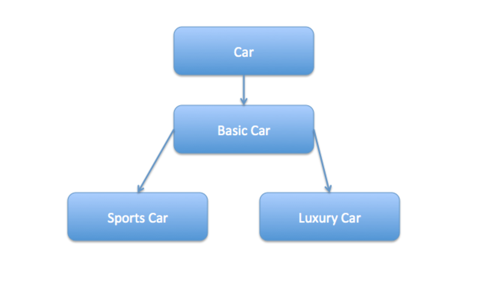

Design Patterns:Decorator Pattern
What is decorator pattern?
- It is a Structural Pattern i.e these are concerned with how classes and objects can be composed, to form larger structures.
- Decorator design pattern is used to modify the functionality of an object at runtime i.e individual object gets the modified behavior without affecting the other instances of the same class.
Intent
- The Decorator Pattern attaches additional responsibilities to an object dynamically .Decorators provide flexible alternative to Sub-Classing for extending functionality.
How decorator pattern is implemented?
- Decorator Pattern is implemented using abstract classes or interface with composition.
What problem decorator pattern solves?

- What if we want to get a car at runtime that has both the features of sports car and luxury car or if we want to have ten different kind of cars. Decorators to the rescue !!!
Advantages
- Decorators provide a flexible alternative to subclassing for extending functionality.
- Decorators allow behavior modification at runtime rather than going back into existing code and making changes.
- The decorator pattern supports the principle that classes should be open for extension but closed for modification.
Disadvantages
- It can be complicated to have decorators keep track of other decorators because to look back into multiple layers of the decorator chain starts to push the decorator pattern beyond its true intent
- Decorators can result in many small objects in our design, and overuse can be complex.